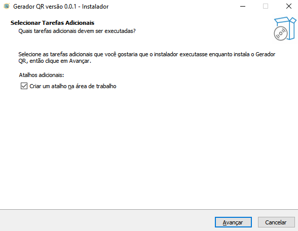
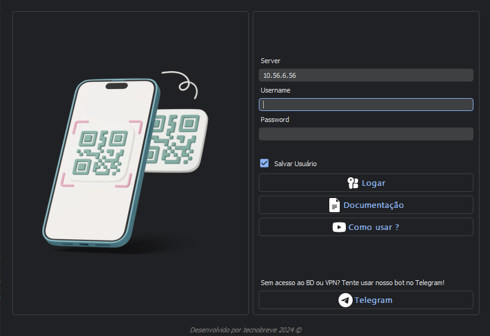
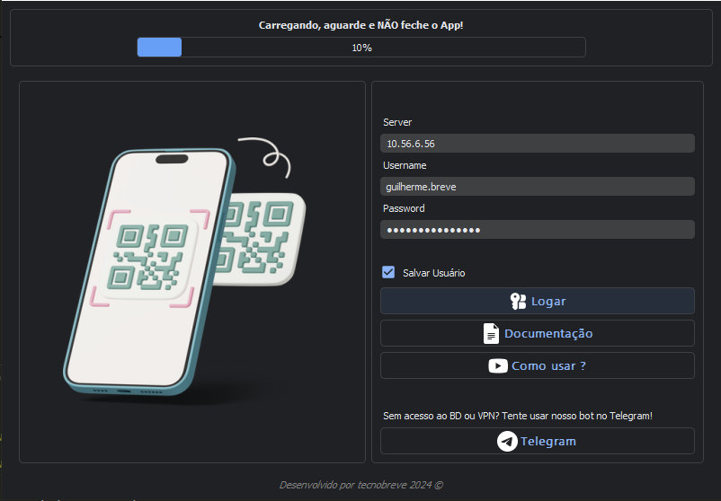
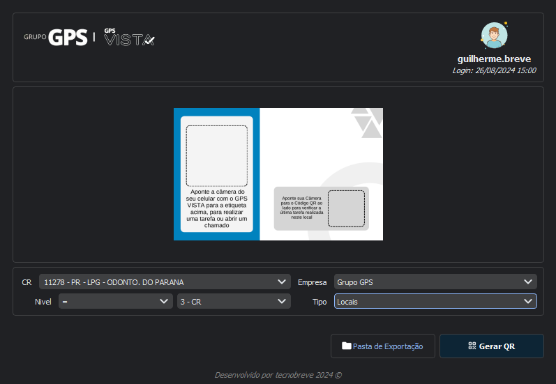
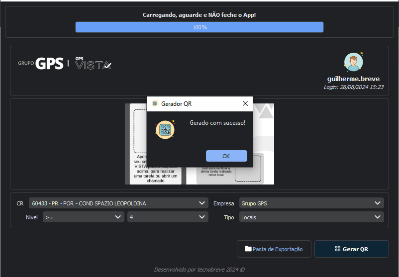
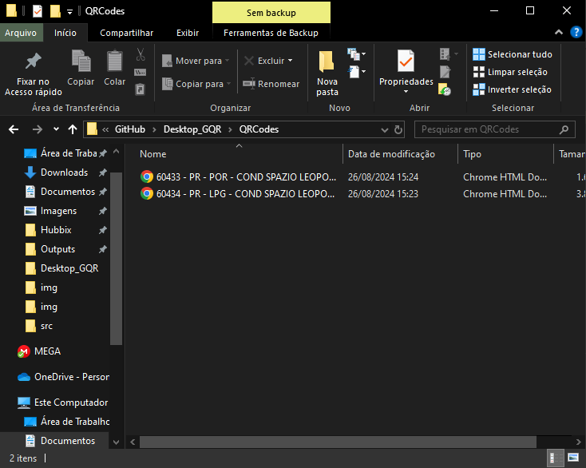
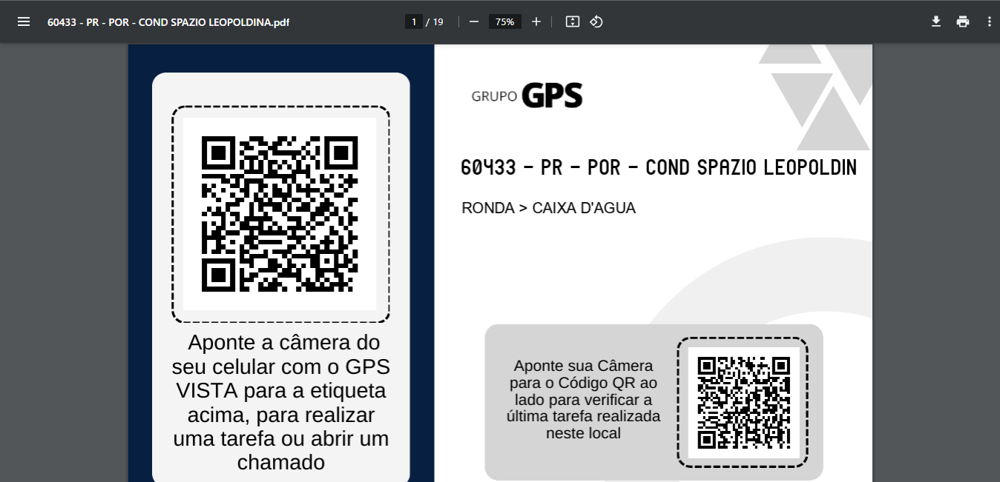
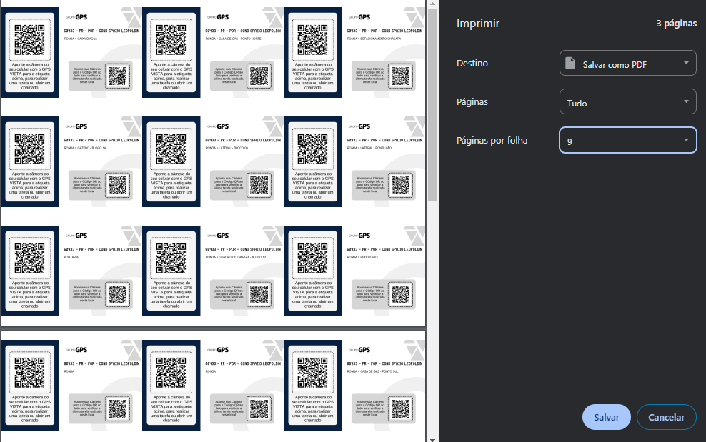

Gerador QR
Instalação
Links
Para que seja realizado a instalação irei disponibilizar uma tabela abaixo, fique atento as atualizações pois elas serão frequentes!
Por mais que o código seja aberto, ainda é indicado que baixe o instalador e execute em sua máquina !
| Sistema | Link para Download |
|---|---|
| Windows | Mega |
| Linux | Na lista de afazeres. |
| Mac OS | Na lista de afazeres. |
| Android | Em desenvolvimento. |
Lembrando que é OBRIGATÓRIO o uso do VPN, caso nao tenha acesso nem ao VPN nem ao DB consulte seu superior!
Como instalar
Será aberto uma caixa de texto simples, basta dar próximo e aguardar a instalação!
Indico que execute como administrador pelo menos a primeira vez, caso não consiga, sem problemas !

Após a instalação ele será executado, caso não inicie automaticamente, faça manual!
Login
Após iniciar, você irá notar que o servidor foi preenchido automáticamente, caso não seja o seu servidor, troque-o !
Agora basta realizar seu login normalmente, com o acesso do Banco de Dados, você tem a opção de salvar este usuário para próximass conexões !

Caso você não tenha acesso, temos um bot no telegram, onde a geração não necessita de login!
Telegram: CNS Bot
Após inserir seus dados de login, o app irá começar a se conectar e realizar algumas consultas simples...
Importante: Não feche o app, aguarde até que seja finalizado o login!

Como gerar
Após logado, será aberto uma tela como essa!

- Primeiro selecione o CR que deseja gerar os QR Codes!
Note que ao selecionar um CR em especifico a cor do Modelo acima modifica, isto é automatico!
-
Depois selecione o Nivel em que deseja que a consulta seja realizada!
Exemplo: Maior ou Igual Nivel 4 (>= 4) Somente o 3 - CR (= 3 - CR) -
Após isto, selecione a logo da empresa que ira aparecer em seu QR Final e se deseja diferenciar ativos de locais, abaixo de empresa!
Agora dar um "ENTER" ou clicar em "Gerar QR", e aguarde até que seja finalizado a confecção dos QRs, o app irá informar com uma caixa de mensagem e com uma notificação!
Caixa de Mensagem do app:

Notificação:
Pasta de Exportação
Agora basta abrir a pasta de exportação clicando em "Pasta de Exportação" ou com o atalho "CTRL + O"

Os QRCodes irão vir completos na página inteira, para separar basta clicar em Imprimir ou salvar em PDF

E em Páginas por folha, coloquem o numero 9 ou o tamanho que preferir!

Pronto! :-)